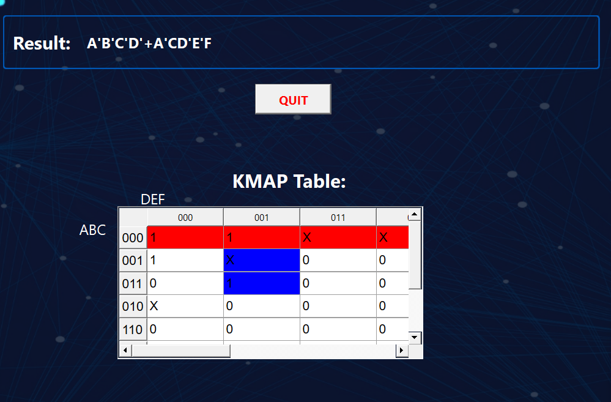

Software Projects

Boolean Logic Simplification using Quine-McCluskey in C++-OOP
Developed a tool to simplify boolean logic expressions using the Quine-McCluskey algorithm in C++ with Object-Oriented Programming.

Root locus and Frequency Response Bode plotter
Created a plotting tool for control systems that generates Root Locus and Bode Plots using Python libraries.
Gate level Arithmatic operation and Shifter Verilog
A gate level abstraction in the description of an arithmatic and logical as well as binary shifter with Carry operations of 64 bit in Verilog HDL.

Implementation of ML Algorithms (Adaline and Perceptron)
Implemented Adaline and Perceptron algorithms in C++ without external libraries, focusing on core ML principles.
Wine Quality Prediction Using ML Models
Utilized various machine learning models to predict wine quality based on a dataset of wine characteristics.

Covid Data Analysis and Visualization
Conducted in-depth analysis and visualization of Covid-19 data to reveal trends and insights.